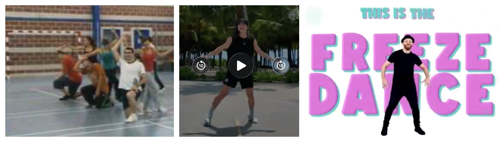

A través de los siguientes enlaces podremos tener acceso a las plantillas de las tres actividades y utilizarlas como diario de clase y podamos trasladar el ensayo a otros entornos:
Además, comparto el enlace para el acceso y descarga de los videos para su uso y utilización en los diferentes ensayos y representaciones posibles, tanto en clase de Educación Física como en otros momentos tanto dentro como fuera del horario escolar: